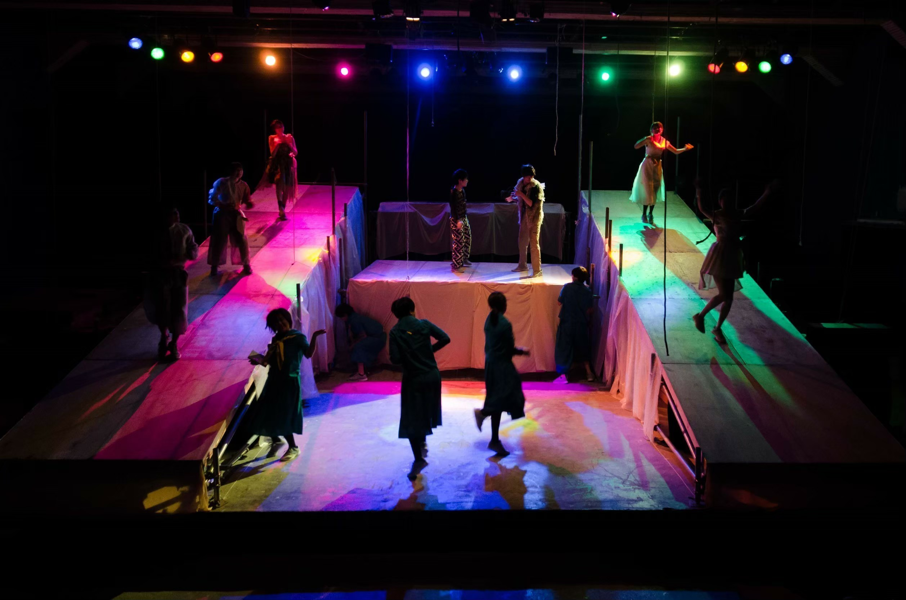
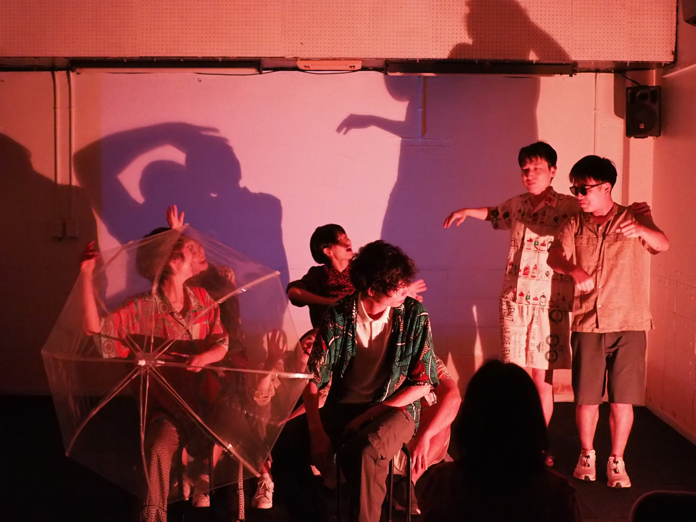
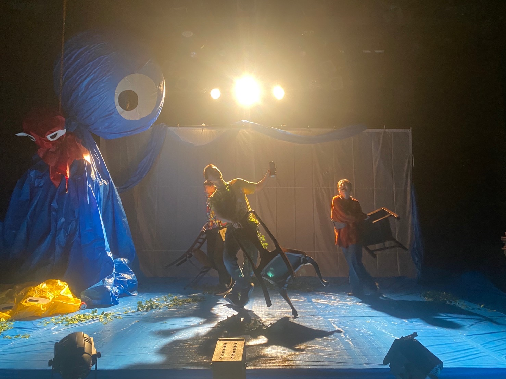
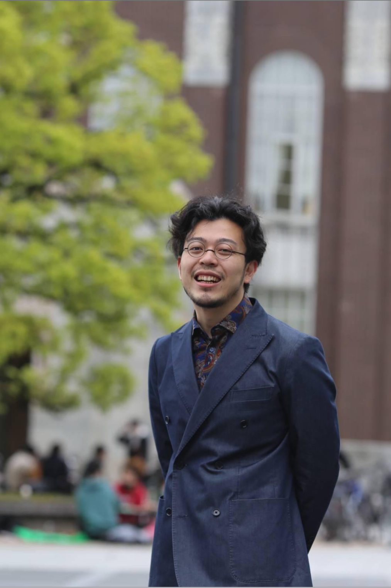

About
劇団FAXとは



主催・玉井秀和が2016年に京都で旗揚げした演劇集団。
公演によって脚本の担当が異なるためその作品スタイルは、見世物小屋風からエンタメ会話劇まで多岐に渡るが、主に脚本を担当するのは主催の玉井と、脚本の高矢。
民俗/寓話的に夢と現を行き来する少年少女の物語が特徴の玉井脚本。緻密な会話に引き込まれ次が気になるサスペンスをベースに、スリルと笑いが交錯する長編作品を得意とする高矢脚本。
公演によってメンバーの様々な顔が楽しめる新時代演劇集団。
創作の理念
劇団FAXの創作の中心にあるのは、日本人の精神性を現代において掘り起こし、その表現を通じて「縁」を醸成することです。ここでいう「縁」とは、人と人だけでなく、場や時間、出来事を共有することで生まれる関係性のことを指しています。
死生観や共同体意識、自然との交わりといった日本的精神の根幹を探るため、京都大学総合生存学館博士課程の研究活動として国内外でフィールドワークを実施。異文化との比較や共鳴を通じて、日本の輪郭を見直しています。研究テーマである「集落の祭りによる現代演劇の再解釈」は、調査と制作が交わりながら進み、そこから得られる視点や方法が作品全体を形づくっています。
創作は演劇上演にとどまらず、展示やワークショップ、トークイベント、交流企画など多様な手段で展開。あらゆる場を通じて「縁」を生み育てることを目指しています。

フィールドワーク in アフリカ

国際交流 & リサーチ
今後のビジョン
今後は、日本人の精神性を描く創作を軸に、国際的な芸術イベントの企画・プロデュースへと活動を広げていきます。海外で培ったネットワークを活かし、過疎地域の田んぼや畑での農作業と舞台芸術を組み合わせた季節ごとの企画を構想中。田植えや収穫の時期に合わせて上演・展示・ワークショップを行い、土地と人、文化を結ぶ「縁」を醸成します。
5年後には、芸術・農業・国際交流を融合させた独自の芸術祭の本格開催を目標に掲げています。地域と世界をつなぐ拠点として、縁が持続的に広がっていく環境をつくることが、劇団FAXの次なる挑戦です。


受賞歴・経歴
メンバー

主催
玉井秀和
Hidekazu Tamai
1994年東京生まれ。京都大学法学部入学を機に、演劇活動を開始。2016年に自身の作品を上演する団体「劇団FAX」を旗揚げ。以降、代表として年間4〜6本の公演を企画・制作し、脚本・演出を手がける。
作品は民俗・寓話的モチーフと現代的感覚を交差させ、夢と現実を行き来する物語世界を特徴とする。京都・東京を拠点に、活動を行っている。現在、京都大学総合生存学館・博士後期課程在籍。
KEX×BIPAM「Shifting Point」採択によりタイで文化交流を行い、2025〜26年には中央アジア・キルギスでの長期フィールドワークを予定。フリーランスの舞台監督としても活動し、演劇を通じて人と人、土地と土地を結ぶ「縁」の創出を目指している。